Proposal for ALTA Group SR
02 Where advanexus helps ALTA
Value for each team. Control for the whole group. One way of connecting work can serve multiple entities. Each retains its own data, permissions and local rules.
Group area Work we connect Value we measure
BanksSerbia and Bitola Report preparation, reconciliation and data checks ↗ Shorter preparation, fewer correctionsPayment institutionsALTA Pay Serbia and Montenegro Record comparison and operational exception handling ↗ Fewer manual comparisons, faster explanationsLeasingALTA Leasing Contracts, obligations and collections in a checked view ↗ Earlier exception detection and ready reportsExchange offices and goldExchange network and ALTA Gold Turnover, settlements and approved position views ↗ Faster reconciliation and exception reviewManagement and shared teamsFinance, risk, control and IT Agreed metrics, execution status and change history ↗ Less repeated preparation and evidence gathering
One operating standard Approved inputs Preparation and checks Execution Result with a trail Next areas: retail, procurement and inventory ALTA Retail has announced a transaction for Idea Marketi and affiliated companies. After completion, sales, suppliers and inventory controls offer further scope.
New processes reuse prepared rules and knowledge, with separate mapping and approval.
03 Market opportunity and competitors
A large market. A focused first buyer. ALTA gains value in its own process; proven repeatability opens the Group and the next buyers.
04 Why advanexus · value ALTA can verify
One ALTA process. A result you can explain.
Execution, answers and evidence — together. ALTA pilot illustration · monthly report · The pilot establishes the gains.
Finance Why this number? Operations Processing stopped. Control Where is the evidence?
When work is scattered across tools
“Why does this amount differ?”
Tables Processing versions Records The team assembles an explanation from several places.
advanexus
Over the systems you already have.
Connect Check Execute Record
With advanexus
The number has an explanation.
With the saved result, you see the report version, processing and available records.
✓ Saved result↳ Report and processing version↳ Available execution recordsPilot measure: minutes to an answer.
When work is scattered across tools
“What finished, and what do we repeat?”
Process steps Outcomes Rules The team investigates the interruption and checks what finished.
advanexus
Over the systems you already have.
Connect Check Execute Record
With advanexus
Continue confirmed work.
Confirmed steps at the start of the same process are not repeated. An uncertain outcome stops continuation.
✓ Confirmed completed steps↻ Continuation permitted by the rules? Uncertainty requires a checkPilot measure: repeated steps and recovery hours.
When work is scattered across tools
“How do we show what happened?”
Work history Applied rules Records The team collects evidence from several tools and messages.
advanexus
Over the systems you already have.
Connect Check Execute Record
With advanexus
Evidence ready for review.
Permitted records are handed over together. Missing evidence stays visible.
✓ Selected records✓ Integrity check? Visible evidence gapsPilot measure: evidence preparation time.
A faster path to answers. Finance · Measure minutes to an explanation.
Less repeated work. Operations · Measure repeated steps and recovery hours.
Faster evidence preparation. Control · Measure time to handover.
Why this whole is difficult to reproduce Product basis ↗ Data, rules, completed steps and evidence must stay consistent after a change or interruption.
Compare the same ALTA process ↗ Manual work · recovery · total cost
Technical founder with banking experience Direct accountability from code to result.
AWS infrastructure · Mainstream Architecture for scale, infrastructure and security; validation per environment.
05 Limited scope, measurable business value
One important process. A clear decision on expansion. Proposed first pilot: daily reconciliation and preparation of one business report. ALTA selects the process owner, sources and success criteria.
01 Scope and baseline Agreed inputs, permissions and current working time.
02 The same job with advanexus Preparation, checks, execution and a result with a trail.
03 ALTA accepts the result Compare impact, pass controls and decide on expansion.
Pilot measures Manual working hours Cycle duration Corrections Time to evidence
ALTA decides on expansion using measured impact and accepted controls.
06 ALTA as a customer and potential strategic partner
Proven value in ALTA. A foundation for wider markets. Start with real value for the group. Then, under a separate partnership agreement, build a repeatable offer for organisations with similar needs.
01
Pilot One process
Measured impact and a verifiable result
◇ ALTA accepts the pilot
02
Whole group More entities and teams
A common standard with local rules
◇ Accepted operating and support model
03
Region Repeatable use cases
Proven solutions and partner sales
◇ Repeatable delivery and economics
04
EU Regulated markets
Local partners and requirements review
◇ Market, legal and operating readiness
05
USA A further stage of growth
References, support and a sales channel
◇ Validated demand and readiness
What ALTA can gain ↗ Measurable impact in its own operations↗ A standard that repeats across the group↗ An agreed role in a joint market offeringProposed next decision Name a business sponsor, choose the first process and agree measures with IT and control teams.
Discuss the pilot ↗ Data traceability and responsible AI use play a growing role in management. A controlled result supports domestic growth and entry into new markets.
Sources and basis of the proposal Public sources explain the business context. ALTA use cases and the expansion path are proposals to validate together.
Public sources checked on 1 October 2026.
advanexus — platform overview ↗ Public platform overview. Supported flows and production acceptance are verified for the agreed scope.
ALTA Group — group members ↗ The official group site links the bank, ALTA Pay, leasing, exchange offices, ALTA Pay Montenegro and ALTA Gold. Proposed use cases are not a confirmed systems map.
ALTA Bank — about us ↗ ALTA Group membership. Proposed flows do not describe ALTA's current architecture.
ALTA Bank — Bitola bank acquisition ↗ Confirmed acquisition. Local permissions and rules require separate assessment.
ALTA Pay Serbia — about us ↗ Electronic money institution and group member with its own existing solutions.
ALTA Pay Montenegro — about us ↗ Local payment institution and member of the ALTA Pay family.
ALTA Leasing — about us ↗ Confirmed ALTA membership. The proposal concerns data and work, not automatic leasing approvals.
Fortenova — announced ALTA Retail / Idea Marketi transaction, 18 September 2026 ↗ Signed transaction subject to closing conditions. Not confirmation of a completed acquisition.
AWS — Shared Responsibility Model ↗ AWS manages security of its cloud infrastructure. Customers and partners have separate responsibilities. This source does not endorse or certify advanexus.
Mainstream — infrastructure and AWS services ↗ Public description of AWS partnership and infrastructure design, migration and management services. advanexus architecture development and validation are grounded in internal project records.
BIS / BCBS — BCBS 239 implementation, 6 January 2026 ↗ Traceability across legacy and distributed systems remains a challenge. The newsletter creates no new supervisory expectations and is not a finding about ALTA.
OECD — Digital Government Outlook 2026 ↗ Data quality, sharing and reuse. Public-sector context, not a banking regulation.
NIST — AI Risk Management Framework / Govern ↗ Governance throughout the AI lifecycle. A voluntary framework, not product certification.
European Commission — AI Act ↗ For high-risk uses: traceability, documentation and human oversight. Obligations depend on use, role and jurisdiction.
Reuters — U.S. bank regulators and AI, 12 June 2026 ↗ News about increased AI scrutiny, not a new regulation. Text verified through the Reuters syndicated copy on MarketScreener.
Reuters / MarketScreener ↗ Microsoft — Fabric overview ↗ Combines processing, analytics, business views and data governance with AI. Public capability description; any advanexus advantage is assessed on the same job and data.
Databricks — Data Lakehouse ↗ Describes integration, processing, analytics, governance and lineage. Combining capabilities is not unique to advanexus; comparison requires the same criteria.
Palantir — Foundry data integration ↗ Describes broad data connectivity and processing capabilities for complex environments. The public description does not establish that advanexus is faster, cheaper or functionally broader.
Palantir — Foundry Action types ↗ Actions connect data changes with defined logic, validation and authorisation. We do not claim Palantir lacks actions or controls.
Microsoft / Fabric — company scale ↗ $331.8bn · company revenue, FY2026. This is a company-wide measure. Revenue and funding valuation are different metrics and do not establish product superiority.
Databricks — company scale ↗ $190bn · funding valuation, Aug 2026. This is a company-wide measure. Revenue and funding valuation are different metrics and do not establish product superiority.
Palantir / Foundry — company scale ↗ $4.48bn · company revenue, 2025. This is a company-wide measure. Revenue and funding valuation are different metrics and do not establish product superiority.
Snowflake — company scale ↗ $4.68bn · company revenue, FY2026. This is a company-wide measure. Revenue and funding valuation are different metrics and do not establish product superiority.
Snowflake — data platform ↗ Official overview of the integrated platform for data, analytics, applications and AI. Competing capabilities require comparison on the same task.
Gartner — Integration Software Technologies Market, 2024 ↗ Public abstract of Gartner market-share analysis. Full report and detailed methodology require access and were not independently reviewed. Broader category than the advanexus offering. Market context, not a calculated advanexus total addressable market.
Gartner — Integration Platform as a Service Market, 2024 ↗ Public abstract of Gartner market-share analysis. Full methodology is not available in the public abstract. Narrower category within the wider integration market. Do not add to the $34.8bn figure.
Microsoft — annual report 2026 ↗ Whole Microsoft, year ended 30 Jun 2026. Revenue, cost of revenue, operating expenses and employees; not Fabric product statistics.
Microsoft / Fabric — market capitalisation ↗ Nasdaq market snapshot, 1 Oct 2026 at 16:36 UTC. Market capitalisation changes during trading and is not revenue.
Microsoft / Fabric — assess cost and scope ↗ Capacity and licensing need sizing. Overloaded capacity can delay or reject new requests; validate workload size and total cost.
Databricks — assess cost and scope ↗ Pricing depends on compute use; storage and networking vary by deployment. Validate total cost and implementation effort for the specific business workflow.
Palantir / Foundry — market capitalisation ↗ Nasdaq market snapshot, 1 Oct 2026 at 16:36 UTC. Market capitalisation changes during trading and is not revenue.
Palantir / Foundry — assess cost and scope ↗ Business objects, relationships and actions need modeling. Validate that implementation scope and total price for ALTA’s workflow.
Snowflake — annual report 2026 ↗ Whole Snowflake, year ended 31 Jan 2026. Expenses and employees from the annual report.
Snowflake — market capitalisation ↗ Nasdaq market snapshot, 1 Oct 2026 at 16:36 UTC. Market capitalisation changes during trading and is not revenue.
Snowflake — assess cost and scope ↗ Compute, storage and data transfer have separate costs. Usage and total workflow cost need control.
Databricks — employees ↗ Official careers page states over 10,000 employees, checked 1 Oct 2026; the count date is unstated.
Informatica — data management, integration and quality ↗ Official source for the stated scope or dated announcement. Historical financial estimates are not confirmed 2026 metrics; undisclosed figures remain marked.
Salesforce completes its acquisition of Informatica ↗ Official source for the stated scope or dated announcement. Historical financial estimates are not confirmed 2026 metrics; undisclosed figures remain marked.
Informatica — announced transaction equity value ↗ Official source for the stated scope or dated announcement. Historical financial estimates are not confirmed 2026 metrics; undisclosed figures remain marked.
Informatica — fiscal 2024 annual report ↗ Official source for the stated scope or dated announcement. Historical financial estimates are not confirmed 2026 metrics; undisclosed figures remain marked.
Informatica — connecting master data and authorized actions ↗ Official source for the stated scope or dated announcement. Historical financial estimates are not confirmed 2026 metrics; undisclosed figures remain marked.
Ataccama ONE — quality, governance and data lineage ↗ Official source for the stated scope or dated announcement. Historical financial estimates are not confirmed 2026 metrics; undisclosed figures remain marked.
Ataccama ONE — official scope documentation ↗ Official source for the stated scope or dated announcement. Historical financial estimates are not confirmed 2026 metrics; undisclosed figures remain marked.
Ataccama — $150 million minority investment ↗ Official source for the stated scope or dated announcement. Historical financial estimates are not confirmed 2026 metrics; undisclosed figures remain marked.
Ataccama — Snowflake Ventures investment and approximately 500 employees ↗ Official source for the stated scope or dated announcement. Historical financial estimates are not confirmed 2026 metrics; undisclosed figures remain marked.
Ataccama — CEO statement on approximately $60 million in annual recurring revenue ↗ Official source for the stated scope or dated announcement. Historical financial estimates are not confirmed 2026 metrics; undisclosed figures remain marked.
Collibra — data and AI governance platform ↗ Official source for the stated scope or dated announcement. Historical financial estimates are not confirmed 2026 metrics; undisclosed figures remain marked.
Collibra — AI controls, evidence and approvals ↗ Official source for the stated scope or dated announcement. Historical financial estimates are not confirmed 2026 metrics; undisclosed figures remain marked.
Collibra — data lineage and transformations across systems ↗ Official source for the stated scope or dated announcement. Historical financial estimates are not confirmed 2026 metrics; undisclosed figures remain marked.
Collibra — approximately 1,000 employees and over 700 customers ↗ Official source for the stated scope or dated announcement. Historical financial estimates are not confirmed 2026 metrics; undisclosed figures remain marked.
Collibra — historical valuation from its 2021 funding round ↗ Official source for the stated scope or dated announcement. Historical financial estimates are not confirmed 2026 metrics; undisclosed figures remain marked.
Alation AIOS — data, context, analytics and authorized actions ↗ Official source for the stated scope or dated announcement. Historical financial estimates are not confirmed 2026 metrics; undisclosed figures remain marked.
Alation — launch of the AIOS intelligence operating system ↗ Official source for the stated scope or dated announcement. Historical financial estimates are not confirmed 2026 metrics; undisclosed figures remain marked.
Alation — AIOS data, governance and automation scope ↗ Official source for the stated scope or dated announcement. Historical financial estimates are not confirmed 2026 metrics; undisclosed figures remain marked.
Alation — historical valuation, recurring revenue and employees from 2022 ↗ Official source for the stated scope or dated announcement. Historical financial estimates are not confirmed 2026 metrics; undisclosed figures remain marked.
Collibra — confirmation that the valuation dates to November 2021 ↗ Official source for the stated scope or dated announcement. Historical financial estimates are not confirmed 2026 metrics; undisclosed figures remain marked.
Palantir — Action log ↗ Successful-action records, versions, users and objects; failure, history and monitoring have other functions. This does not establish the absence of a combined configuration or package across Foundry.
Palantir — Webhooks ↗ Distinguishes external calls before writes from later side effects, their outcomes and user visibility. This describes the specific mechanism, not reliability of the whole platform.
Market, buyers and competitive advantage advanexus targets organisations where business results cross systems and teams yet must remain explainable and verifiable. Financial groups are the first commercial focus. For ALTA, we propose one controlled process, an accepted result and then repeatable expansion.
Different platform purposes, the same ALTA task to validate The view distinguishes purpose and starting model, not whole-product quality. Check each platform’s release and scope. Prove ALTA’s advantage with the same task, permissions, quality and total cost.
Platform The job buyers choose it for Buyer and result Palantir / Foundry ↗ Run decisions and actions Connects business objects, data and rules so teams can make and carry out decisions.
Operational leaders and application teams Business model → Operational apps
Microsoft / Fabric ↗ Unify Microsoft analytics Unifies preparation, processing and reporting over shared data in the Microsoft ecosystem.
Data and reporting teams Shared data → Power BI and analytics
Databricks ↗ Build processing and models Gives teams a shared environment to build and operate processing, analytics and AI models.
Data engineers and model teams Data engineering → Analytics and models
Informatica / IDMC ↗ Connect and harmonise data Brings integration, quality, governance and master data together across a complex estate.
Data owners and architects Different sources → Harmonised data
Snowflake ↗ Use and share data Provides a managed service for analytics, data sharing and applications, with less underlying infrastructure work.
Analysts and organisations sharing data Managed service → Analytics and sharing
Ataccama ONE ↗ Establish data quality Monitors and remediates quality with lineage and master data, to support decisions and models.
Data quality and master data teams Find data errors → Trusted data
Alation / AIOS ↗ Give data business meaning Connects data to business concepts and policies for analytics and work with governed agents.
Data users and automation teams Business context → Analytics and automation
Collibra ↗ Set policies and accountability Connects meaning, ownership and policies to controls for using enterprise data and AI.
Data owners, control and risk teams Ownership and policies → Data governance
advanexus ↗ advanexus · controlled work across existing systems For operations, finance and control: a defined flow, checked steps, saved result and available explanation in the same operational context. ALTA accepts the outcome against agreed criteria; expansion follows that decision.
Existing systems advanexus: execution + control Result + explanation + evidence
What a team gets in a concrete situation Finance asks: “Why this number?” The saved result → report version, processing and available records.
Explain it without assembling it again. Measure minutes to an answer. Operations: processing stopped Confirmed step status → controlled continuation.
Less repetition of completed work. Measure repeated steps and hours. Control asks for the history Selected history + evidence → one handover.
Material ready for review. Measure time and accepted material. These ALTA workflows are pilot proposals. A saved result does not automatically trace every cell to every transaction. Continuation requires a confirmed outcome and the same workflow version. Control decides whether to accept the package; it is not regulatory certification.
advanexus: a connected core A supported workflow checks the selected processing path, retains version and rights context, distinguishes step outcomes and connects available records to a verifiable package. Gaps stay visible. This is an implemented product contract; the pilot accepts its ALTA scope.
Foundry: evidence across multiple functions Official documentation separates successful-action records, failure metrics and edit history. Records include the user, version and linked objects. For ALTA, verify how these parts form one evidence package for the selected workflow.
The same test: what if an external step fails? Foundry documents different outcomes for external calls before a write and later side effects: a later action can fail after a success message. In both solutions, test an agreed interruption, the visibility of uncertain outcomes and evidence of completed work. Different execution models require the same business acceptance criterion.
What is implemented and why it creates value Processing location and method rules An agreed condition may prohibit temporary copying or require transfer and cleanup confirmation. An unauthorized path is rejected. Control data before execution; measure rejected paths and manual interventions. Execution bound to versions and rights The result stays linked to a known actor, a specific version and permitted scope. Explain numbers faster; measure time to an accepted explanation. Controlled workflow resumption Completed steps differ from failed ones. A changed or uncertain context can block resumption. Less repeated work; measure repeated steps and active recovery hours. Portable evidence and visible gaps The package links permitted records and sources; an independent check detects altered content. An unverified source stays unverified. Simpler control or audit handover; measure package preparation and acceptance time.
The same task, conditions and measures
Compare one ALTA reconciliation and reporting flow: the same inputs, scope, permissions, accepted quality and required evidence. Comparative test results are not available; the capability comparison above is a documented comparison of scope.
Criterion What we measure for every vendor Business outcome
Active work Hours per accepted cycle Released capacity Explain the result Minutes to source, rules and available evidence Faster exception resolution Interruption and recovery Repeated steps and additional hours Less repeated work Rights at execution Rejected unauthorized actions / all attempts Controlled access Next deployment Days to implement and reused components Repeatable delivery Total cost License + implementation + infrastructure + support Net business value
Today we can demonstrate versions and permissions tied to analytical results, step state and recovery checks, integrity of available evidence and revalidation of a supported action. Accepted ALTA workflows, a history of outcomes and repeatable delivery build the business advantage. Major platforms have strong related capabilities; architecture alone does not prove that the product cannot be copied.
One critical flow. A result ALTA can accept. From approved inputs to completed work, an explained result and available evidence. Measure value for the same scope and accepted quality.
01 Approved inputs Existing systems and files → 02 Execute and check Supported steps and agreed rules → 03 Analyse and use Result, report and exception → 04 Explain and prove Source, version and execution record Shared context: permissions · rules · versions · accountability · available evidence
ALTA’s business decision Agreed criteria→ Measurement and process-owner review→ Accept the result → decide on expansion The diagram covers supported steps and linked records. Business acceptance is the pilot owner’s decision; required checks and approvals are agreed for the specific flow.
Where the eight alternatives focus The areas overlap. The diagram shows the emphasis of each offer in our comparison; it does not assert that another area is absent.
01 Execution, analytics and applications Broad platforms for processing and using data
Foundry · Fabric · Databricks · Snowflake 02 Integration and trusted data Connectivity, quality, monitoring and governance
Informatica · Ataccama 03 Context, control and AI work Governed data, agents, flows and accountability
Alation / AIOS · Collibra Informatica also integrates application processes. Ataccama has processing and analytics. Alation/AIOS offers agent flows and conversational analytics; Collibra has governance workflows and data notebooks.
Our qualitative assessment of similarity in scope · 1 Oct 2026. Execution and analytics come first, followed by quality, versions and control, then AI assistance. The number indicates comparison order, not a score for quality, speed or price.
The whole platform across five business areas Platform Connect and execute Prepare trusted data Analyse and use Explain and control Assist work with AI advanexus ↗ Reference model Supported sources, files, jobs and schedules Quality rules and definition versions SQL, Python, reports and views Permissions, runs, exceptions and available evidence Permitted analysis and selected actions with confirmations Palantir / Foundry ↗ Order 01 Integration, transformations and business actions Versions, checks and data health Analytics, code and operational applications Lineage, permissions, rules and action relationships AIP and tools over controlled context Microsoft / Fabric ↗ Order 02 Transfer, processing and connected steps Data versions; quality checks through Purview Analytics, code and Power BI Shared permissions, catalog and supported controls Copilot for processing, analysis and authoring Databricks ↗ Order 03 Transfer, processing and scheduled jobs Pipeline checks and data versions SQL, Python, analytics and applications Shared permissions, lineage and activity records Assistance, models and governed AI tools Informatica ↗ Order 04 Data and application-process integration Quality, monitoring and consistent business data Data preparation for analytics and AI Catalog, lineage, access and governance CLAIRE and data-management automation Snowflake ↗ Order 05 Processing, tasks and data changes Quality measures and data history SQL, analytics, code and applications Permissions, catalog, lineage and policies Cortex and tools over permitted data Ataccama ONE ↗ Order 06 Processing, reconciliation and transformation plans Quality, remediation and consistent data Data Stories and connected analytics Catalog, lineage and data ownership Assistance and agents for trusted data Alation / AIOS ↗ Order 07 Agent flows and governed data products Checks, data and documented context Queries, conversational analytics and existing BI models Catalog, lineage, policies and approvals Agent Studio, agents and their controls Collibra ↗ Order 08 Governance workflows and quality checks Data quality and observability Queries, data notebooks and shared insights Lineage, rules, approvals and AI oversight Governed context and AI-system governance
Cells describe business areas, not identical features. Actual scope depends on the product, modules, sources and environment. Supported advanexus capabilities are not a proven ALTA outcome; an accepted pilot verifies speed, quality, evidence and total cost.
Primary documentation: Foundry ↗ · Purview ↗ · Databricks ↗ · Snowflake ↗ · Ataccama ↗ · Collibra ↗
The opportunity for advanexus: one agreed job, a connected result and evidence, direct accountability and reuse of an accepted solution.
A large market; a focused first segment Gartner estimates the global integration software market at $34.8bn in 2024, growing 10.9%. The narrower integration platform as a service segment was $8.5bn, growing 23.4%. These estimates have different scopes; the smaller segment is part of the wider market and the amounts must not be added.
This is publicly available market context, rather than a calculated market accessible to advanexus. The complete Gartner methodology requires access. A newer 2025 segment report exists, but its public abstract does not disclose the total amount.
Size the first serviceable segment using qualified buyer count and validated annual contract value. The pilot and commercial offer must validate scope, pricing and repeatability.
Gartner — Integration Software Technologies Market, 2024 ↗ · Gartner — Integration Platform as a Service Market, 2024 ↗
Who buys and what they need to achieve
First buyers Banks, payment institutions and financial groups with multiple existing systems; Serbia and the region first.
Who decides A business sponsor in operations, finance or risk, together with IT and control functions.
First task Reconciliation, a business report and exception explanation — the same workload and accepted quality. Why an investor should care One product core can be reused across supported processes and organisations. Implementation and source mapping remain specific to each environment. The ALTA pilot can establish value in real operations; group expansion tests repeatability and the support model. Proposed commercial model: licensing, implementation and support. A market partnership with ALTA is a separate agreement after validated results. Where advanexus is most relevant When the entire agreed task crosses existing systems: preparation and transfer, quality checks, repeatable execution, stable definitions, analytics and reporting, exceptions and available evidence. Different capabilities share permissions, versions, rules and execution context. This reduces the need for teams to manually join an explanation of one result across disconnected workspaces.
Different platform purposes, the same ALTA task to validate The same task and data; the same permissions, workload and accepted quality. Measure active hours and manual handovers, cycle duration and time to explain a result. Include licensing, implementation, infrastructure, support and maintenance. Verify evidence coverage, failure behaviour and readiness for the next process. Major vendors have broader ecosystems and greater production maturity. advanexus first validates the agreed scope, supported flows and environment requirements. Speed, lower cost and fewer incidents become results only after measurement.
Direct platform alternatives for the same task Revenue, costs and employee figures cover whole companies, rather than individual products. Total operating costs here are cost of revenue plus operating expenses; they exclude some financing and tax items. Each profile states its period. Private companies have undisclosed figures; older valuations and recurring revenue are dated and distinguished from recognized annual revenue.
Market capitalization is a dated Nasdaq snapshot retrieved on 1 Oct 2026 at 16:36 UTC (12:36ET) and changes during trading. Private funding valuation is a different measure.
Year ended 2025-12-31
Market capitalisation · 1 Oct 2026, 16:36 UTC $453.5bn ↗ Documented strength Connects data with business objects, decisions and controlled actions.
What the buyer must assess Business objects, relationships and actions need modeling. Validate that implementation scope and total price for ALTA’s workflow.
Implementation effort is a criterion to measure, rather than an established vendor weakness.
Total company includes government and commercial business; these are not standalone Foundry results.
Sources: Palantir — Foundry data integration ↗ · Palantir / Foundry — company scale ↗ · Palantir / Foundry — market capitalisation ↗ · Palantir / Foundry — assess cost and scope ↗
Microsoft / Fabric Year ended 2026-06-30
Documented strength Unified data, analytics and reporting; strong fit with the Microsoft ecosystem.
What the buyer must assess Capacity and licensing need sizing. Overloaded capacity can delay or reject new requests; validate workload size and total cost.
Financial figures and employees cover Microsoft as a whole, not Fabric alone.
Sources: Microsoft — Fabric overview ↗ · Microsoft — annual report 2026 ↗ · Microsoft / Fabric — market capitalisation ↗ · Microsoft / Fabric — assess cost and scope ↗
Private company · announcement 13 Aug 2026
Annual revenue run-rate · 13 Aug 2026 >$7bn ↗ Documented strength Strong large-scale data processing, analytics and AI with shared governance.
What the buyer must assess Pricing depends on compute use; storage and networking vary by deployment. Validate total cost and implementation effort for the specific business workflow.
Annualized revenue run-rate is not completed annual revenue. Funding valuation is not market capitalization. The careers page does not date its employee count.
Sources: Databricks — Data Lakehouse ↗ · Databricks — company scale ↗ · Databricks — employees ↗ · Databricks — assess cost and scope ↗
Historical standalone company · 2024. Salesforce acquisition completed 18 Nov 2025.
Documented strength Broad data integration and transformation, quality, governance, master data and governed APIs for actions across systems.
What the buyer must assess A specific job requires confirming the necessary services and licenses, workflow ownership, and the path from the final result to every execution and approval.
Informatica figures from the last verified complete standalone fiscal year; do not attribute Salesforce revenue to IDMC. Approximate transaction equity value, net of Salesforce’s existing investment; not a current market capitalization.
Sources: Informatica — data management, integration and quality ↗ · Salesforce completes its acquisition of Informatica ↗ · Informatica — announced transaction equity value ↗ · Informatica — fiscal 2024 annual report ↗ · Informatica — connecting master data and authorized actions ↗
Year ended 2026-01-31
Market capitalisation · 1 Oct 2026, 16:36 UTC $119.97bn ↗ Documented strength Managed platform for data, analytics, applications and AI.
What the buyer must assess Compute, storage and data transfer have separate costs. Usage and total workflow cost need control.
Total company revenue includes professional services. FY2026 ended 31 January 2026.
Sources: Snowflake — data platform ↗ · Snowflake — annual report 2026 ↗ · Snowflake — market capitalisation ↗ · Snowflake — assess cost and scope ↗
Private company · historical disclosures from 2022 and 2025.
Documented strength Processing and transformations, quality, catalog, lineage, monitoring and master data; Data Stories for analytical views.
What the buyer must assess For a business workflow ending in execution, validate the boundaries between Ataccama, the data-processing systems and the systems that perform the final action.
Historical approximate CEO disclosure of annual recurring revenue; neither recognized annual accounting revenue nor a confirmed 2026 result. Bain Capital’s 2022 minority investment, not a valuation. The December 2025 Snowflake Ventures investment amount is not disclosed in the source.
Sources: Ataccama ONE — quality, governance and data lineage ↗ · Ataccama ONE — official scope documentation ↗ · Ataccama — $150 million minority investment ↗ · Ataccama — Snowflake Ventures investment and approximately 500 employees ↗ · Ataccama — CEO statement on approximately $60 million in annual recurring revenue ↗
AIOS introduced 14 Jul 2026. Financial figures are a historical 2022 disclosure.
Documented strength AIOS connects catalog, lineage, quality, context, analytics and automated actions; its scope goes beyond a catalog.
What the buyer must assess For the release introduced in July 2026, validate availability of each required capability, action permissions and the source-to-evidence path on the specific job.
Historical funding valuation from 2022; employees and recurring revenue were also disclosed then. These are not confirmed 2026 metrics.
Sources: Alation AIOS — data, context, analytics and authorized actions ↗ · Alation — launch of the AIOS intelligence operating system ↗ · Alation — AIOS data, governance and automation scope ↗ · Alation — historical valuation, recurring revenue and employees from 2022 ↗
Private company · funding valuation from November 2021.
Documented strength Data and AI governance, lineage, controls, reviews, approvals and evidence across a large enterprise environment.
What the buyer must assess On the same business job, validate what Collibra performs, what processing and analytics systems perform, and how execution is evidenced across those boundaries.
Historical funding valuation from November 2021; neither current market capitalization nor a verified present valuation.
Sources: Collibra — data and AI governance platform ↗ · Collibra — AI controls, evidence and approvals ↗ · Collibra — data lineage and transformations across systems ↗ · Collibra — approximately 1,000 employees and over 700 customers ↗ · Collibra — historical valuation from its 2021 funding round ↗ · Collibra — confirmation that the valuation dates to November 2021 ↗ · Collibra — confirmation that the valuation dates to November 2021 ↗
Other competing approaches A buyer can choose internal development or an integrator assembling specialist products. Examples include Fivetran/dbt for movement and transformation, Confluent for continuous streams, chosen analytics and business applications. This can solve the task well; consistent permissions, execution, support and evidence need design and maintenance.
AWS Glue — data integration ↗ · Google Cloud — data integration ↗ · Oracle — application and data integration ↗
AWS, Google and Oracle already offer integration and can broaden their platforms. AWS infrastructure and Mainstream have a documented infrastructure role in this proposal; this does not establish AWS endorsement of advanexus. Partnership and competition can exist in different parts of the same solution.
Sources and basis of the proposal Close ×
Market, buyers and competitive advantage Close ×
Capacity value report Close ×
Print report Download report ↓
{"report": {"assumptions": ["Before and after must cover the same workload and accepted quality. Enter active team work hours, rather than waiting time or total elapsed process time.", "The annual view assumes 12 months with identical cycle counts, hours and hourly value. Seasonal changes are excluded.", "Released capacity may allow the same team to handle more work, prepare faster and repeat fewer tasks. A cash saving exists only when costs actually decrease or another financial benefit is confirmed.", "This is gross capacity value. Licensing, implementation, infrastructure, support and maintenance have not been deducted. Net business benefit requires a separate calculation of all these costs.", "In the ALTA pilot, the process owner confirms the baseline, measures the result and verifies quality, permissions and available evidence. Expansion follows an accepted result."], "assumptions_title": "5. What to verify before deciding", "capacity_labels": {"cycle_hours": "Hours difference per cycle", "month_hours": "Hours difference per month", "month_value": "Capacity value difference per month", "reduction": "Reduction in active work", "year_hours": "Hours difference over 12 months", "year_value": "Capacity value difference over 12 months"}, "capacity_title": "3. What the change contributes", "cycles_unit": "cycles / month", "download_filename": "advanexus-alta-report.txt", "effect_negative": "These assumptions show an increase in active work. Negative differences mean additional hours and workload value. This scenario does not support a capacity saving; review the process and assumptions.", "effect_positive": "Under these assumptions, advanexus would release the displayed capacity for the same workload. The team could direct it towards exceptions, controls and additional work. The pilot must verify how much work is actually reduced.", "effect_zero": "These assumptions show no monthly capacity release. Assess value through quality, control and time to an accepted result, or choose another pilot process.", "formula_labels": {"after_cost": "Monthly work value after", "after_hours": "Monthly hours after", "baseline_cost": "Monthly work value before", "baseline_hours": "Monthly hours before", "cycle_hours": "Hours difference per cycle", "month_hours": "Hours difference per month", "month_value": "Monthly capacity value", "reduction": "Work reduction", "year_hours": "Hours over 12 months", "year_value": "Value over 12 months"}, "formulas_title": "4. How it was calculated", "input_labels": {"after": "Active hours per cycle after the change", "before": "Active hours per cycle before the change", "cycles": "Cycles per month", "rate": "Value of one work hour"}, "inputs_title": "1. Your assumptions", "intro": "This calculation uses the values you entered. It shows the change in active work for the same task; an illustrative scenario becomes a confirmed result only after ALTA measures and accepts the pilot evidence.", "metric_columns": ["Measure", "Value"], "monthly_columns": ["Measure", "Before", "After"], "monthly_labels": {"cost": "Work value per month", "hours": "Active work hours per month"}, "monthly_title": "2. The same monthly workload: before and after", "overflow_error": "The result is too large for a reliable calculation. Enter smaller values.", "rounding_note": "Displayed values are rounded to at most two decimals; the calculation uses the entered values.", "summary_negative": "For {cycles} cycles per month, changing from {before} to {after} per cycle adds {hours} monthly: {percent} more active work and {value} in additional workload value.", "summary_positive": "For {cycles} cycles per month, moving from {before} to {after} per cycle releases {hours} monthly: {percent} less active work and {value} in gross capacity value.", "summary_zero": "With {before} before and {after} after per cycle, across {cycles} cycles per month the difference is {hours}. These assumptions show no monthly capacity release.", "title": "Capacity value report"}, "slides": ["What advanexus is", "Value for the group", "Market and growth", "Why advanexus", "Pilot and savings", "Growth path"], "ui": {"calculate_report": "Calculate and show report", "capacity": "capacity value / month", "close": "Close", "contact_email_body": "Dear advanexus team,\n\nI would like to discuss the proposed use of advanexus within ALTA Group.\n\nGroup company or business area:\nProcess proposed for the pilot:\nExpected outcome:\n\nName:\nRole:\nPhone:\nSuggested meeting time:", "contact_email_label": "Email us about the ALTA pilot", "contact_email_subject": "Discuss an advanexus pilot for ALTA Group", "contents": "Presentation contents", "cost_disclosure": "Released capacity is not automatically a cash saving. Net benefit includes licensing, implementation, infrastructure and support.", "cta_contact": "Discuss the pilot", "detail": "Details", "download_report": "Download report", "fullscreen": "Full screen", "growth": "more active work", "hours_month": "hours per month", "hours_unit": "h", "next": "Next slide", "presenting": "Slide view", "previous": "Previous slide", "print": "Print presentation", "print_report": "Print report", "proposal": "Proposal for ALTA Group", "reading": "All slides", "reduction": "less active work", "scenario_error": "Enter valid values. Before hours must be greater than zero. Other values must be nonnegative.", "slide": "Slide", "source_intro": "Public sources explain the business context. ALTA use cases and the expansion path are proposals to validate together.", "source_title": "Sources and basis of the proposal", "sources": "Sources", "sources_checked": "Public sources checked on 1 October 2026.", "theme": "Change theme"}}


 Microsoft / FabricUnify Microsoft analytics$331.8bncompany revenue · FY2026
Microsoft / FabricUnify Microsoft analytics$331.8bncompany revenue · FY2026